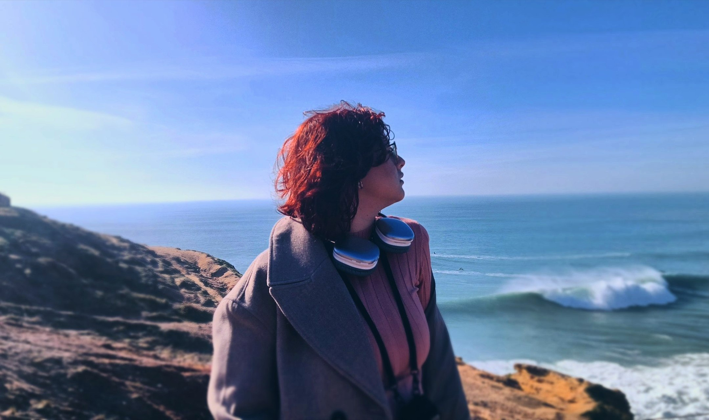
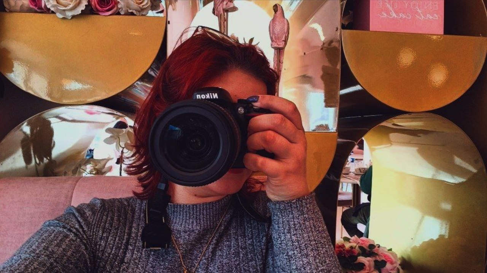

A Arte de Sofia
Uma mente com uma infinitude de mundos a serem criados.


Novas Histórias
Algumas das histórias que contei através do design que formou criações divertidas e cheias de simbolismo.
Explorar Universos


Olá, eu sou a Sofia!
Sou uma designer júnior e fotógrafa, apaixonada por transformar ideias em histórias com identidade própria. Entre tipografias, composições, a fotografia e conceitos incomuns, procuro sempre explorar novas maneiras de expressar algo através da comunicação visual.
Este portfólio reúne alguns dos meus projetos que mais tenho orgulho. Eles refletem o meu percurso e a fome por mais conhecimento sobre as áreas que me interesso, experiências e evolução na área do design.

